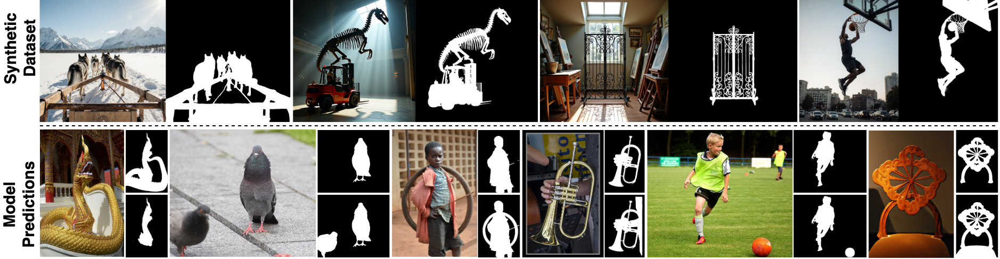
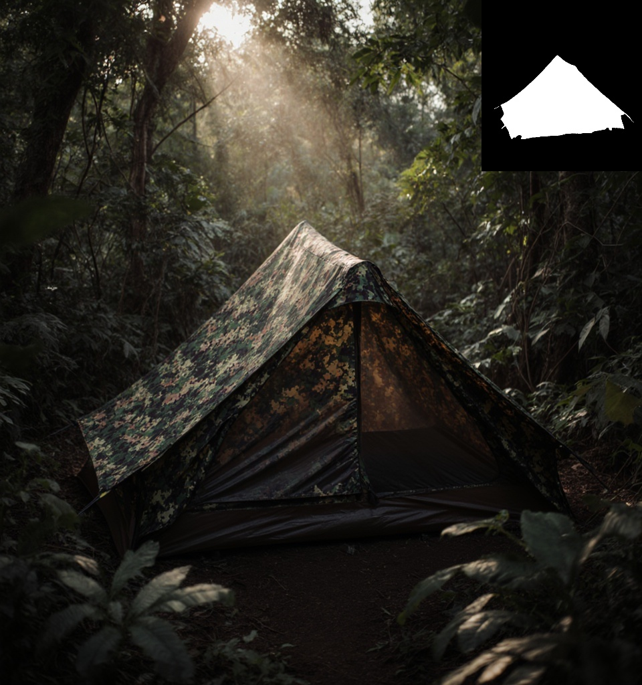

Large-Scale Synthetic Dataset for SOD • Ambiguity-Aware Architecture • State-of-the-Art Model
University of Oxford, VGG • AIST
We present two key contributions: (1) S3OD Dataset — 139K+ high-resolution synthetic images generated through a multi-modal diffusion pipeline that extracts labels from FLUX DiT features, concept attention maps, and DINO-v3 representations, and (2) Ambiguity-Aware Architecture — a streamlined model with multi-mask decoder that naturally handles inherent ambiguity in salient object detection. Our approach unifies DIS and HR-SOD tasks, achieving state-of-the-art performance with strong cross-dataset generalization.

Addressing the data bottleneck through synthetic data generation
Scroll through our diverse, high-quality synthetic samples
Our pipeline simultaneously generates images and masks by extracting multi-modal signals during diffusion:
This ensures strong image-label alignment and high-quality annotations without teacher model bottlenecks.
Our feedback-driven approach dynamically identifies model weaknesses and adapts the sampling distribution:
Unlike static methods, this enables targeted data generation where the model needs it most.

← Scroll to explore more categories →
Synthetic pre-training resulting in strong real-world generalization
| Method | Training Data | DAVIS-S Fm↑ | HRSOD-TE Fm↑ | DUTS-TE Fm↑ | DUT-OMRON Fm↑ |
|---|---|---|---|---|---|
| InSPyReNet | DIS-5K | .921 | .891 | .845 | .713 |
| BiRefNet | DIS-5K | .919 | .887 | .860 | .744 |
| MVANet | DIS-5K | .907 | .902 | .852 | .711 |
| S3OD (Ours) | DIS-5K | .951 | .923 | .902 | .808 |
| S3OD (Ours) | S3OD Synthetic Only | .970 | .954 | .937 | .860 |
Upload your own images and see S3OD in action with our interactive demo on HuggingFace Spaces.
🎯 Launch Interactive DemoSimple Python API for state-of-the-art segmentation
# Install from GitHub
pip install git+https://github.com/KupynOrest/s3od.git# Import and initialize
from s3od import BackgroundRemoval
from PIL import Image
# Initialize detector (automatically downloads model from HuggingFace)
detector = BackgroundRemoval()
# Load and process image
image = Image.open("your_image.jpg")
result = detector.remove_background(image)
# Save result with transparent background
result.rgba_image.save("output.png")
# Access predictions
best_mask = result.predicted_mask # Best mask (H, W) numpy array
all_masks = result.all_masks # All masks (N, H, W) numpy array
all_ious = result.all_ious # IoU scores (N,) numpy array# Load the S3OD dataset from HuggingFace
from datasets import load_dataset
dataset = load_dataset("okupyn/s3od_dataset")
# Access samples
for sample in dataset['train']:
image = sample['image']
mask = sample['mask']
# Process your data...If you find S3OD useful, please cite our work
@article{s3od2025,
title={S3OD: Towards Generalizable Salient Object Detection with Synthetic Data},
author={Kupyn, Orest and Kataoka, Hirokatsu and Rupprecht, Christian},
journal={arXiv preprint arXiv:XXXX.XXXXX},
year={2025}
}